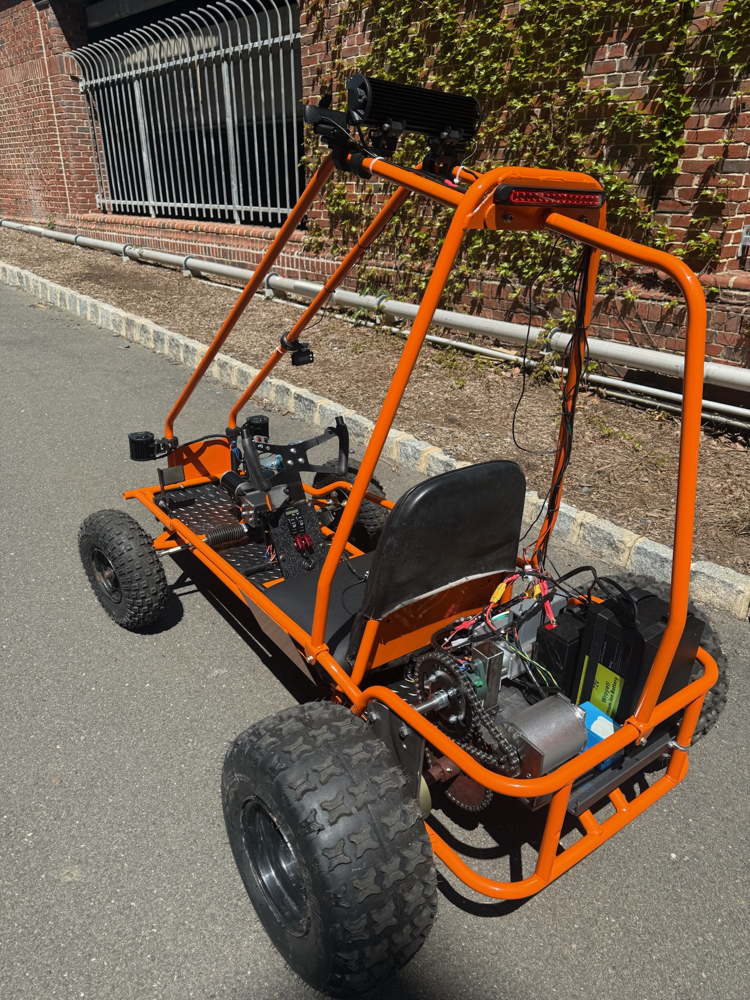
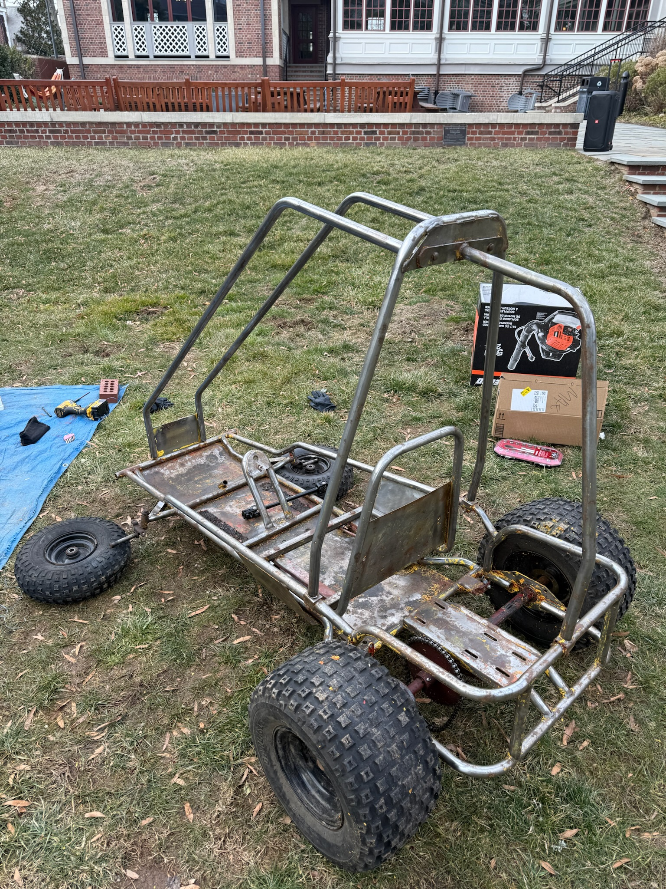
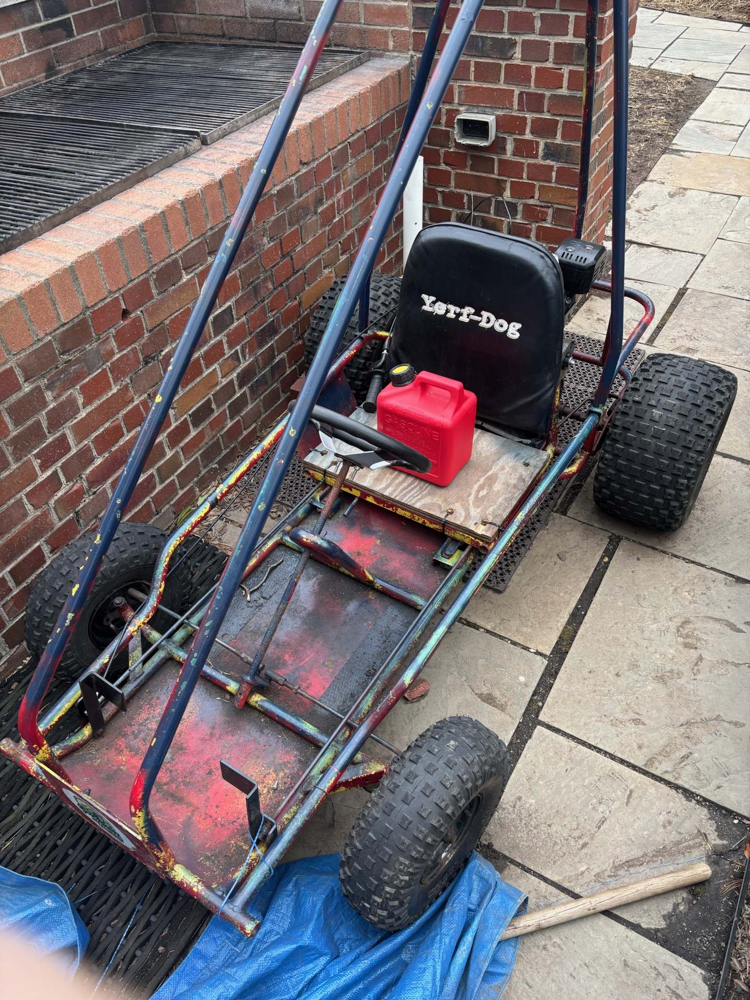
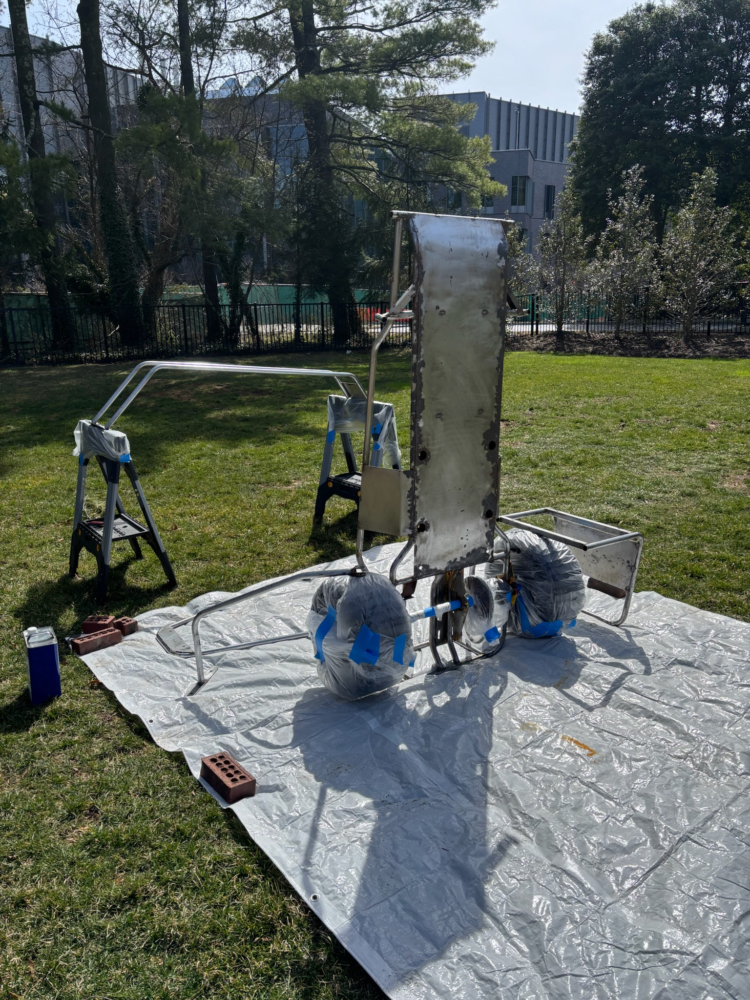
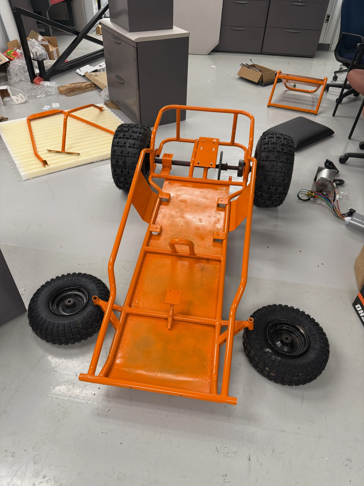
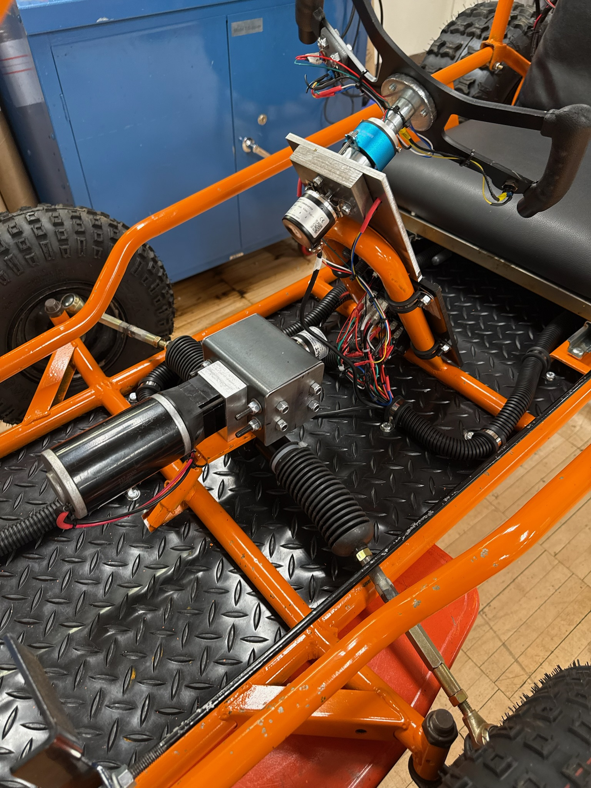
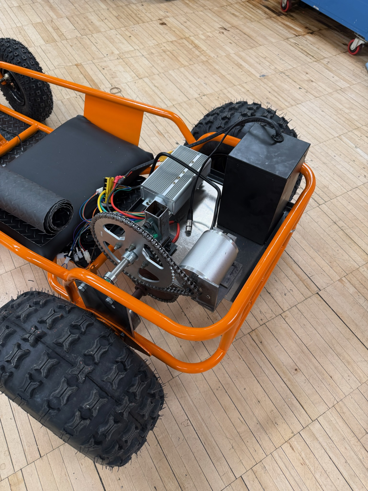
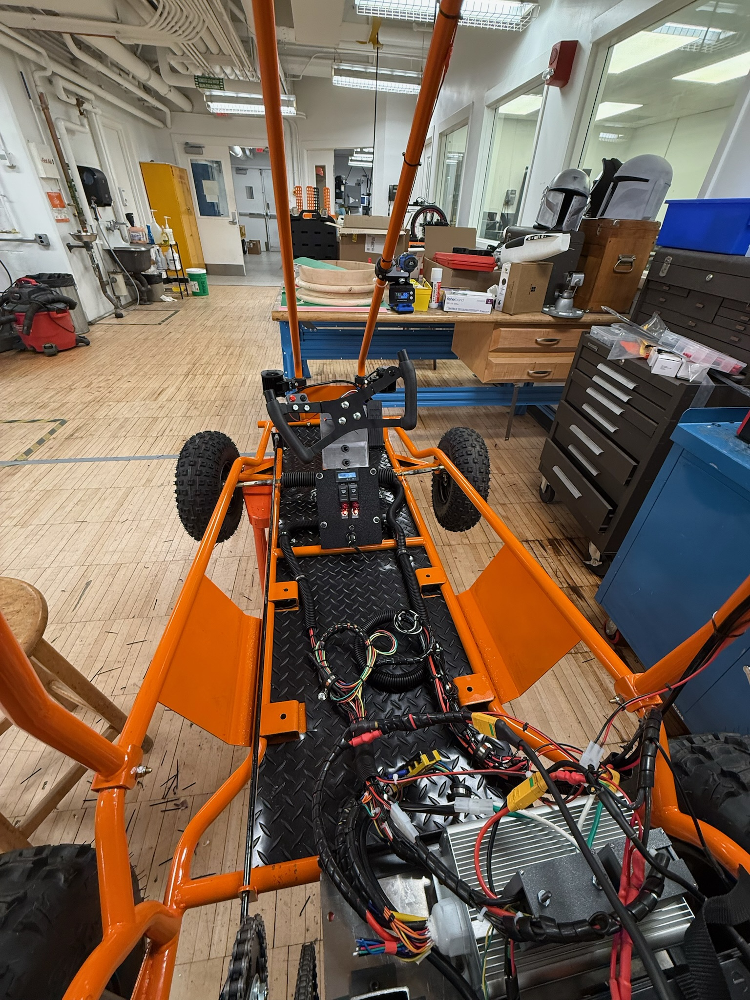
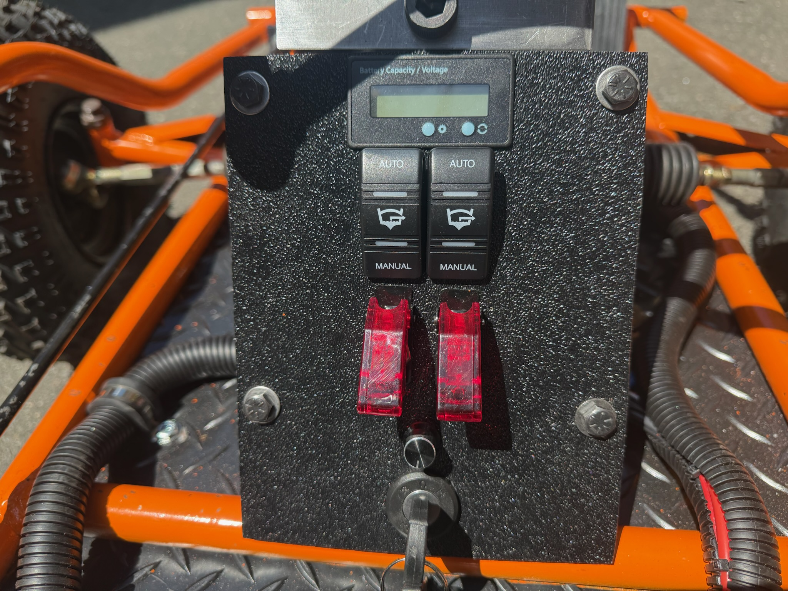

An Electric Go-Kart Using Machine Learning Models For Autonomous Driving


This thesis presents the design and implementation of a fully autonomous, electric go-kart, developed from a refurbished Yerf-Dog frame. The primary objective was to demonstrate vision-based autonomous navigation using low-cost hardware and open-source software. Major subsystems include a 72V electric drivetrain, a custom gear-reduction assembly, a steer-by-wire mechanism actuated via a high-torque motor, and a perception pipeline driven by real-time computer vision.
A laptop running Python processes front-facing camera input using YOLOv8 for object detection and SegFormer for semantic segmentation. These outputs are encoded and transmitted to a Teensy 4.1 microcontroller, which actuates steering and throttle commands. The final system reliably performed lane following and object recognition (specifically for pedestrians and stop signs), validated through over 20 hours of autonomous testing on campus roads.
Peak velocity reached 14 mph with excess torque available. The system operates for approximately 5 hours on a single charge and was built under a $2,100 budget, with a total expenditure of $2,040.17. Limitations in model inference speed and decision granularity were encountered, suggesting opportunities for optimization in both perception latency and control smoothing. This work serves as a proof of concept for low-cost, modular autonomous vehicles and highlights the practical integration of mechanical, electrical, and software subsystems under real-world constraints.
The software has two main modes of operation: Autonomous and Manual. A manual switch installed on the go-kart switch panel toggles between these two modes.
The autonomous mode uses a laptop running Python to process camera input. The two machine learning models used are YOLOv8 for object detection and SegFormer for determining road drivability. A script implements these models so that, together, they take an image of the road and place bounding boxes around certain objects (pedestrians, cars, stop signs, etc.). Functions then use the placement and size of these bounding boxes to create steering angle commands for the steering motor.
The manual mode is a Python script which takes the steering angle from an encoder on the steering wheel and processes it into an input for the steering motor. A PID controller library and a Servo library are used for the steering motor with a variety of tunable parameters such as max steering angles, max speed, and max acceleration.
Below is a gallery of the restoration, design, building, and testing process. Each photo tells a unique story of a different challenge the team overcame.

Go-kart before any work took place. Originally used an internal combustion engine, and every component was in poor condition. The team solely utilized the frame and stripped all other components.
The stripped frame down to bare metal. Paint stripping chemical and a variety of sandpaper was used.

The frame prepped for paint. Tires and other components were masked off to prevent over-spray.

The frame after paint with new tires.

The drive-by-wire steering mechanism. Using a brushed DC motor and a PID controller, the team controls the steering angle from a steering wheel via a pair of encoders. This design went through many iterations and was eventually geared down to a 50:1 ratio outputting a maximum steering torque of 70 Nm.

The team built an additional shaft to gear down the drive motor. The photo shows a 24:1 reduction, but after initial testing, the team changed the drive sprocket to have an 8.4:1 drive ratio for a top speed of 20 mph while maintaining sufficient torque.

The final wiring harness in the go-kart. The team used wire conduit and many zip ties to hold everything together, then tucked the excess wires under the seat.

Two manual/auto switches toggle between manual and autonomous control. A battery meter regulates the 12V battery, and a potentiometer controls headlight brightness.